отчёт 1
Лабораторная работа: Работа с Git#
Студент: Самарина Арина
Группа: PЗ468
Цель работы#
Освоить базовые команды Git для работы с локальными и удалёнными репозиториями.
Научиться выполнять основные операции — инициализацию, добавление файлов, создание коммитов, ветвление и слияние — как в терминале, так и через графический клиент GitHub Desktop.
Подготовка окружения#
- Установлен Git и GitHub Desktop.
- Создана папка
test_repo_for_web— локальный репозиторий для экспериментов. - Настроено подключение к удалённому репозиторию GitHub.
Ход выполнения#
1. Создание репозитория#
Создана новая папка:
test_repo_for_web
В ней будет находиться локальный репозиторий Git.
Команда:
git status
показала, что репозиторий пуст, коммитов нет, ветка master.

2. Создание файла и первый коммит#
Создан новый пустой файл:
New-Item README.txt -ItemType File
Add-Content README.txt "привет!"
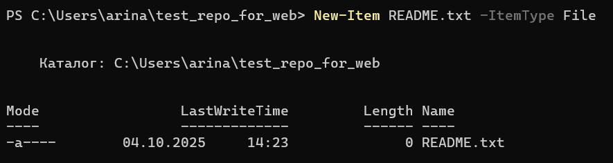
 Файл появился как untracked.
Файл появился как untracked.
Добавление и фиксация изменений:
git add README.txt
git commit -m "first file"
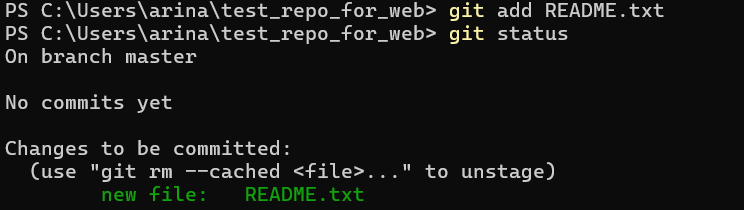

3. Изменение и добавление нескольких файлов#
Добавлен текст в файл:
Add-Content README.txt "привет, мир!"
Git отмечает README.txt как modified.
Добавлены все .txt файлы:
git add '*.txt'
 Создан новый файл
Создан новый файл README-ENG.txt, затем:
git commit -m "all files with .txt extension were added"
Изменены 2 файла: добавлен README-ENG.txt, обновлён README.txt.
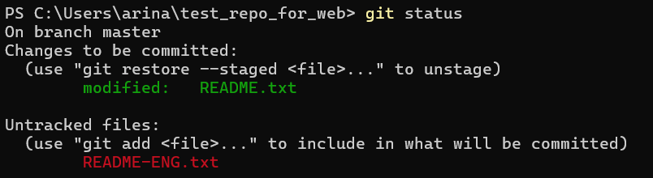


4. Просмотр истории#
git log
git log --summary
Отображена история коммитов и подробности изменений.
 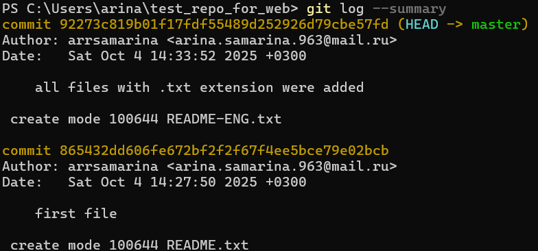
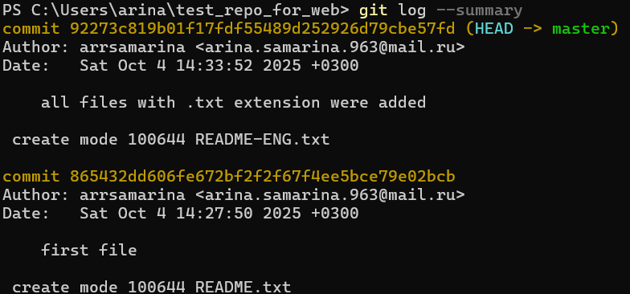
5. Добавление удалённого репозитория и push#
git remote add origin <URL_репозитория>
git push -u origin master
После добавления строк:
Add-Content README.txt "hello!"
Add-Content README-ENG.txt "world!"
 и выполнения:
и выполнения:
git add '*.txt'
git commit -m "all files with .txt extension were changed"
git push -u origin master
локальная ветка master синхронизирована с origin/master.
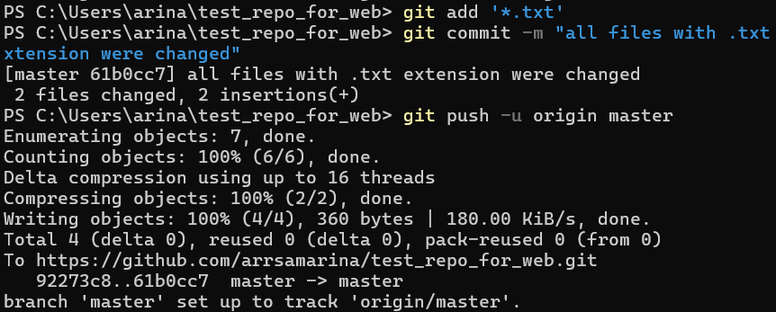
6. Получение изменений и сравнение версий#
git pull origin master
git diff HEAD
После добавления строки "hello!" в README.txt Git показал зелёную строку +hello!, означающую новое добавление.
 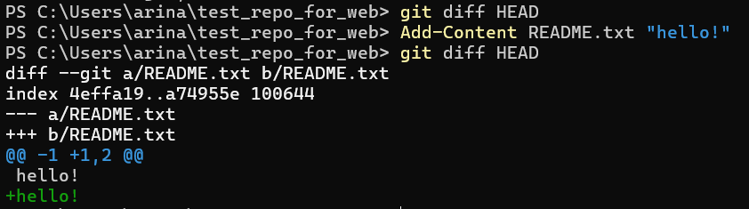
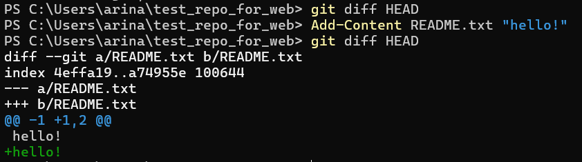
7. Работа с папками и файлами#
Создана структура:
mkdir folder
New-Item folder/file.txt -ItemType File
 Git сообщает:
Git сообщает:
README.txt— изменён (modified),folder/— неотслеживается (untracked).
Добавление в индекс:
git add README.txt folder/.
8. Проверка staged-изменений и отмена#
git diff --staged
git reset folder/file.txt
git diff
git checkout -- README.txt
Файл README.txt возвращён к последнему зафиксированному состоянию.
В репозитории осталась только неотслеживаемая папка folder/.
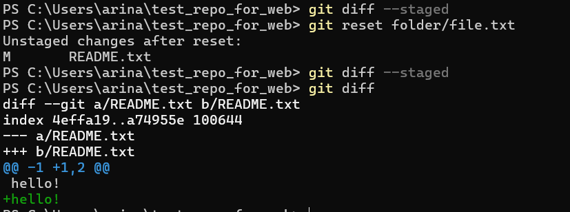

9. Работа с ветками#
Создание и переход:
git branch clean_up
git branch
git checkout clean_up
 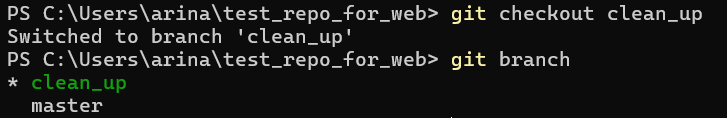
Удаление и фиксация:
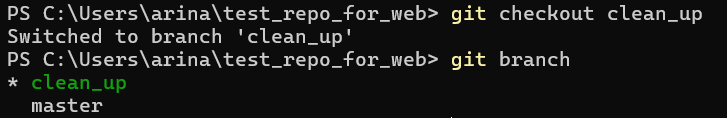
Удаление и фиксация:
rm -r folder
git rm README-ENG.txt
git commit -m "deleted folder and files"
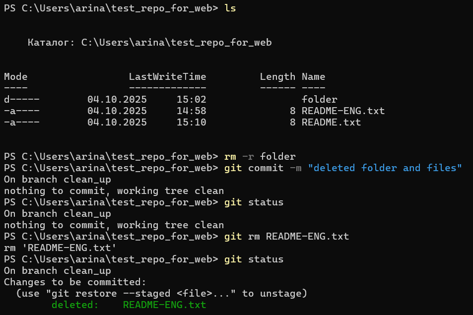
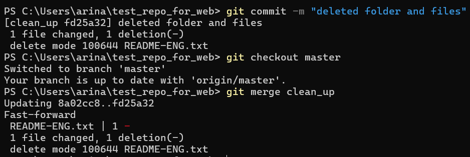
 Возврат и слияние:
Возврат и слияние:
git checkout master
git merge clean_up
git push
Изменения из clean_up успешно объединены с master.
Работа через GitHub Desktop#
1. Создание нового репозитория#
Создан новый репозиторий прямо из GitHub Desktop.
 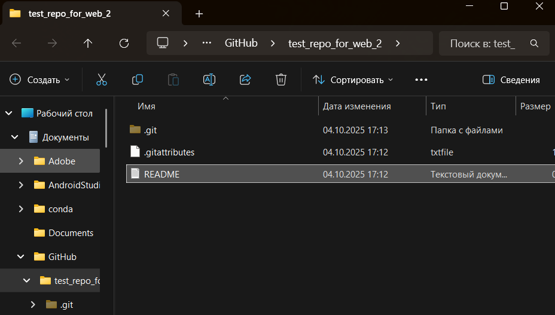
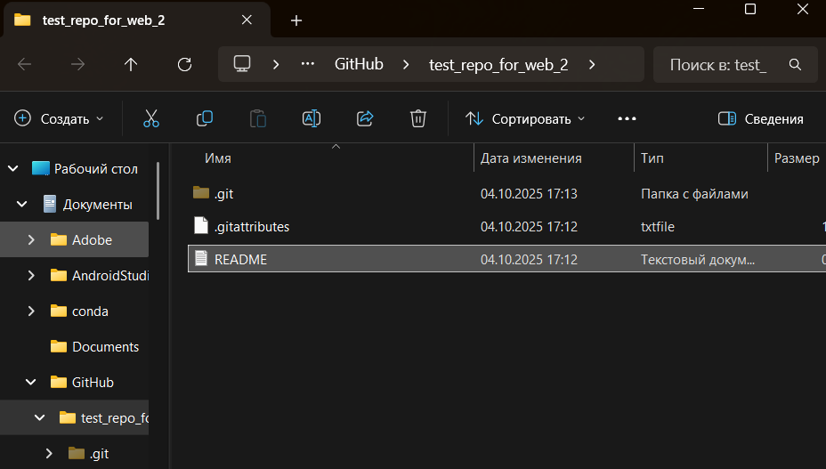
2. Добавление файлов#
В проводнике добавлен файл README.txt.
Сделан первый коммит — изменения отображаются во вкладке Changes и History.
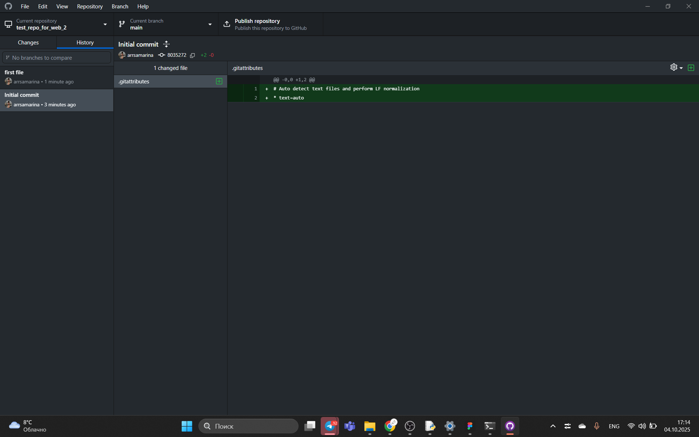
3. Изменение и коммит#
Добавлен новый файл README-ENG.txt, изменён README.txt.
Закоммичено и опубликовано на GitHub.
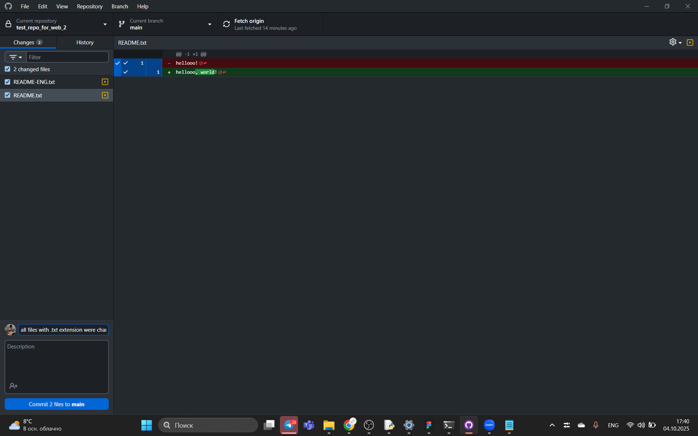
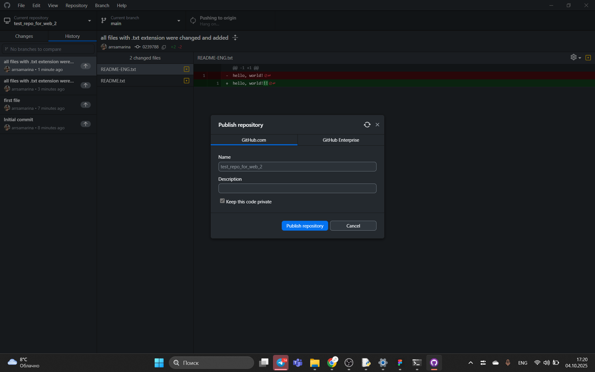
4. Работа с ветками#
- Создана ветка
clean_up - Удалён файл
README-ENG.txt - Переключение обратно на
main - Выполнен merge ветки
clean_upвmain - Изменения запушены

5. Итоговый вид репозитория#
На GitHub отображаются все изменения: история коммитов, удаление файлов и актуальное состояние ветки main.
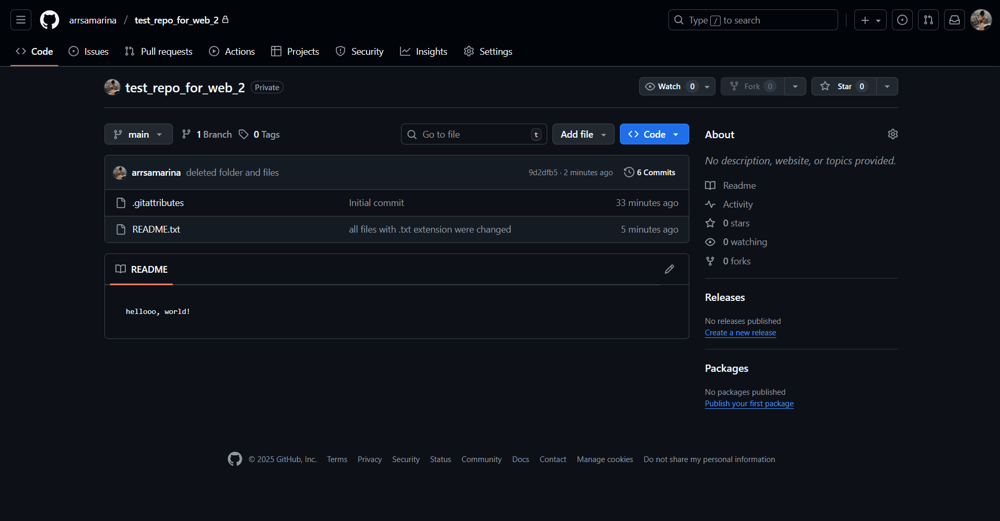
Результаты#
- Изучены и применены команды:
git init,git add,git commit,git log,git diff,git branch,git merge,git push,git pull,git rm. - Получены навыки работы с ветками и индексом.
- Освоен интерфейс GitHub Desktop и работа с удалённым репозиторием.
Вывод#
В ходе лабораторной работы были освоены базовые принципы работы с системой контроля версий Git.
Закреплены практические навыки работы в терминале и графическом клиенте.
Процесс синхронизации с GitHub отработан полностью — от создания репозитория до push-коммитов и работы с ветками.
Приложение#
Для оформления отчёта использован формат Markdown (.md).